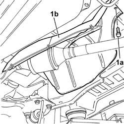

1076A48 CATALYTIC CONVERTER HEAT SHIELD - R R
- Path
- Procedures > 10 ENGINE UNIT > 1076 EXHAUST PIPES AND SILENCERS > 1076A EXHAUST PIPE FASTENINGS AND PROTECTIONS > 1076A48 CATALYTIC CONVERTER HEAT SHIELD - R R
- Kind
- repair procedure (removal / refitting; the operation number is the code)
- Applies to
- engines: 2.0 16V; all production periods
- Interactive page
- https://sloeber94.github.io/elrnDB-fDct/en/#/244000880
Applies to: engines: 2.0 16V; all production periods
 Removing
Removing
 Refitting
Refitting- Position the vehicle on the lift.
- Acting on the retaining springs, release the Lambda sensor wiring.
1. Undo the bolts (1a) and remove the heat shield (1b) for the exhaust pipe.

Applies to: engines: 2.0 16V; all production periods
Refitting
Removing- Place the heat shield in position.
- Tighten the bolts fixing the shield.
- Attach the Lambda sensor wiring to the fastening springs.
- Remove the vehicle from the lift.